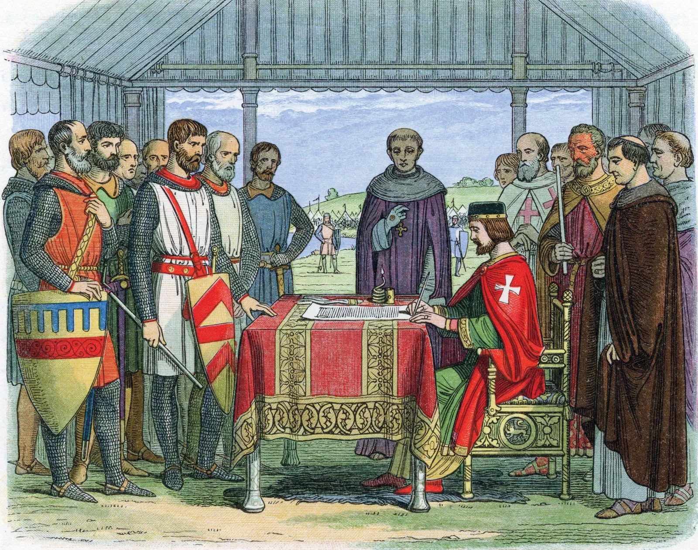

History
All through history, people have obtained rights and obligations through their membership in a group where most societies have had heritage and tradition that is kindred to the ‘golden rule’ of “Do unto others as you would have them do unto you.”. The Hindu Vedas, the Babylonian Code of Hammurabi, the Bible, the Quran (Koran), and the Analects of Confucius are five of the most ancient written scripts that call questions regarding people’s duties, obligations, and rights.
Did you know?
Ideas of ethical behavior, justice, and human dignity can be traced way back to the primordial civilization of Babylon, China, and India and it has since then been essential in the evolution of human societies. A key strand in these concepts about justice is that there was a ‘natural law’ that stood above the law of rulers which means that everyone had particular rights to the simple reason of they are human beings.
1215
The King of England was forced by the English barons back in 1215 to sign a Magna Carta which was the first document to put a line or limitation on the arbitrary power of the King to make him responsible to his subjects which then helped to lay out a number of basic rights to protect citizens including having the right to a trial.
State members of the United Nations then took commitment on 1945 to promote respect for inclusive human rights and to reach this goal, the United Nations built a Commission on Human Rights and made it responsible for drawing a version of a document that spells out the true meaning of each fundamental rights and freedoms proclaimed in the Charter.
1945


The Universal Declaration of Human Rights (UDHR) was often recognized as the international Magna Carta which extended the insurgency in international law accompanied by the United Nations Charter and was adopted by the 56 member states of it. Its principles have been assimilated into the constitutions of most of more than 185 nations now in the UN and although a declaration is not a legally binding document, the UDHR has reached the level of customary international law for the reason of being regarded as “a common standard of achievement for all people and all nations”.